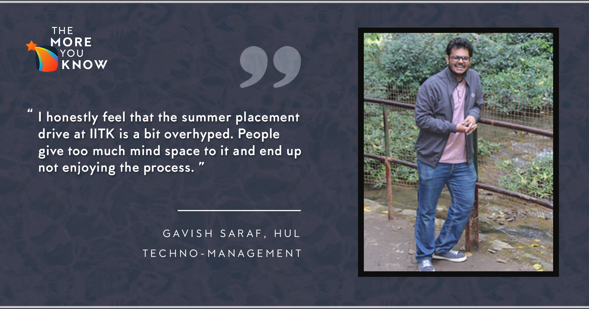

May 29, 2021
Hey there!
I am Gavish Saraf, a Y18 in the department of Mechanical Engineering. I am writing this blog not as a
guide to cracking the summer placements but as a record of my experiences. Some of the readers might
find them helpful, in which case I would be thoroughly elated. In the course of this write-up, I will
touch upon my motivation for applying for specific profiles, preparation journey, selection process, and
some general advice.
(For those of you interested in detailed ITC and HUL application and interview experiences, feel free to
look at this
document.)

Your personality in text!
That’s right! Your resume is your personality in text format. Let me share the key points on my resume at
the time of application. I had a 9+ CPI. I had done one departmental project by then. The best PoR on my
resume was that of the Manager, Research Wing, AnC Council. I did not have any internships by then, which
was my fault, and if you have the opportunity, you should do one in the summers before the 5th semester.
Here I would like to point out that the resume making process is very tedious but at the same time
extremely important. Start preparing your master resumes ASAP and get them reviewed by as many seniors as
you can. Polish the document as much as possible. It took me 18 iterations before I could confidently
settle on the final resume.
What's my true calling?
This question still haunts me. It will probably haunt you as well if you are as normal as me. Before
diving into the preparation process, you will have to decide what profile(s) to apply for. The ideal way
to do this will be to either decide upon or rule out some of the profiles by doing relevant internships in
the first two years. However, if, like me, you did not do any internships in the past, then your best bet
will be to contact as many seniors as you can. Understand the nuances of various profiles through their
experiences and try to establish if that profile suits your liking. Participating in club activities,
working in student bodies, and doing projects is also a great way to gauge your liking or suitability to
various fields.
In my case, talking to many seniors, working with AnC, and engaging with friends in preparation-related
activities helped me realize the suitable options. I realized that software and finance-related profiles
are not for me. So that left me with two choices: Techno-managerial or Quantitative interns. Working with
AnC caused me to develop a liking for the managerial aspects of any task; hence, techno-managerial interns
offered by ITC, HUL, and P&G became my first preference.
The grind time!
Now that you have decided on your profile, you need to find out what to prepare and how to prepare. That
can be done by contacting seniors who cracked the internship processes of your target companies or by
reviewing the preparation material available on the SPO website. It is essential to talk to as many people
as possible because every company that fits your target profile will have a slightly different selection
procedure than the rest. Hence, there will be some company-specific prep involved.
Since I was going to appear only for Quant and techno-managerial profiles, I prepared accordingly.
For the quant, I studied MSO201 notes and solved many puzzles from multiple sources. I found the most
engaging puzzles in the book titled “Fifty Challenging Problems in Probability.” I also solved the
problems on Brainstellar and those given in the YouTube videos by TedEd. Since most quant companies also
involve a little bit of coding in their tests, I practiced standard questions from InterviewBit and
GeeksForGeeks. However, since I did not like coding that much, my practice was mostly superficial.
For the techno-managerial roles, I was aware of ITC and HUL only. P&G was an unexpected yet welcomed
addition to the group. Thus, during my prep, I mainly focused on the process of the first two companies.
Since both of them are known for being GD intensive, I attended all the mock GDs organized by AnC to get
the flavor of what actual GDs are like. I also formed a prep group along with a few friends, and we met
regularly to practice GDs and discuss HR questions. GD topics for practice came mainly from the SPO’s
preparation resources. For case-based GD, I used hit bullseye to find relevant cases for practice.
Run up to the D-Day
Around 20-25 days before day-1 interviews, companies started to appear on the internship application
portal. HUL was the very first company to be listed on the portal. ITC and P&G followed closely. The
selection procedure for ITC and HUL was very similar. The first step was shortlisting based on resume
followed by an HR questionnaire. The final criteria for shortlisting at this stage were a well-balanced
resume and a rigorously answered questionnaire. This round was followed by a GD round in the case of ITC
and an on-demand-video-based case interview round for HUL.
The final shortlist for interviews was released one day before the interview. My interviews for ITC and
HUL were scheduled back to back within the same hour. Both the companies had one round of interviews
only. Having thoroughly prepared for HR questions with my friends, I was not worried about them. To
practice the technical questions, I used to stand in front of the mirror and interview myself. This
might seem weird, but it proved to be very effective in terms of improving my confidence. I also talked
to some seniors on the night before my interviews to get some ideas about the potential interview
questions and much-needed pep talks.
The Judgement Day
I had a few “rules” that I followed during the interviews that helped me keep the interview from getting
too ugly. It is necessary to greet the interviewers with a smile because the first exchange sets the
mood for the rest of the interview. Be clear with what you know and what you don’t. If you encounter a
question that you don’t know the answer to, try to think about it but do not reply randomly. It is
better to confess that you are not aware of that particular topic. Furthermore, try to maintain control
of the interview by directing it in such a way that it remains in your safe zone.
Conclusion and general advice
I honestly feel that the summer placement drive at IITK is a bit overhyped. People give too much mind
space to it and end up not enjoying the process. It doesn’t matter if you get a day-1 internship or you
do not get an SPO intern at all. What matters is your learning from all the experiences you had in the
process. Do not take this internship season as a “make or break” point of your career. Take it as a new
experience, a part of your college life that teaches you a lot of new things.
"I honestly feel that the summer placement drive at IITK is a bit overhyped. People give too much
mind space to it and end up not enjoying the process."
Be humble if you get an offer on-campus, be patient if you don’t. You need not wait for the right
opportunity to come to you. You always have the option to find work out there yourself. Do not settle
for a profile that does not excite you or a company whose vision does not resonate with yours just
because that was your only option on-campus. Lastly, don’t get too anxious; things eventually will fall
in place.
Thank you for reading this far. It was a long one.
If you need some help or advice and feel that I might be of use, do not hesitate to contact me.
All the Best!!
- Gavish Saraf, Edited by Mandar Wayal